Products
ATLAS
Atlas is built to transform our world,
revolutionizing industry with unmatched strength and autonomy.
Meet the new industrial revolution
The world's most dynamic humanoid robot, Atlas is transforming enterprise applications. Built on decades of research and real-world experience, Boston Dynamics is delivering the new face of industrial automation.
-
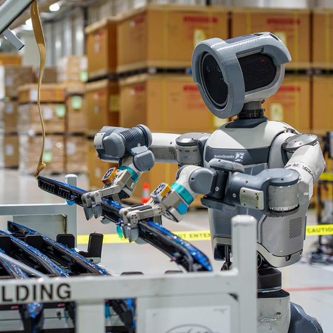
- Depoly Seamlessly
- Atlas requires minimal supervision for a range of material handling applications and supports barcode scanning and other workflow integrations.
-
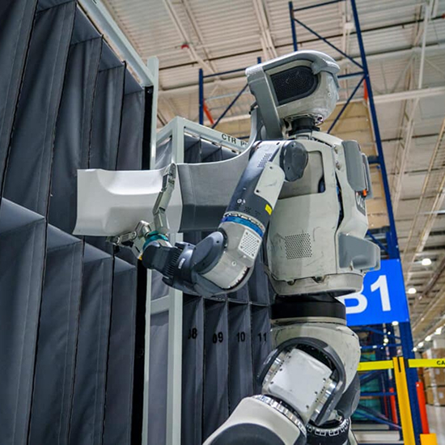
- Work Intelligently
- Built with the latest advancements in AI, when one Atlas learns a new skill, that task can easily be deployed across your entire Atlas fleet.
-
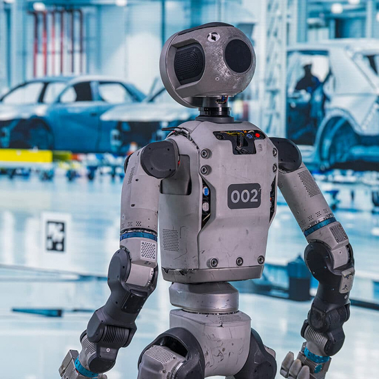
- Operate Continuously
- Atlas autonomously navigates to a charging station and swaps out its own battery before getting right back on task.
We're engineering a better robot
-
- flash_onHigh power
- Atlas is here to start working and stay working, with the strength and endurance to complete demanding tasks, and self-swappable batteries for continuous operation.
-
- model_trainingDynamic
- Atlas learns new tasks quickly, adapts to dynamic environments, and works autonomously with minimal supervision.
-
- nest_eco_leafHuman-Scale
- Atlas is made to operate within the same workstations using the same equipment your staff does, with robust perception, intelligent safety systems, and workflow integrations.
-
- settingsRobust
- Atlas is designed for reliability and serviceability, with a wide operating range for predictable performance even under the toughest conditions.
SPOT
The Agile Mobile Robot
Your teammate, your tool
Spot helps teams monitor sites, improve safety, and make smarter decisions through automated inspection and data collection.
-
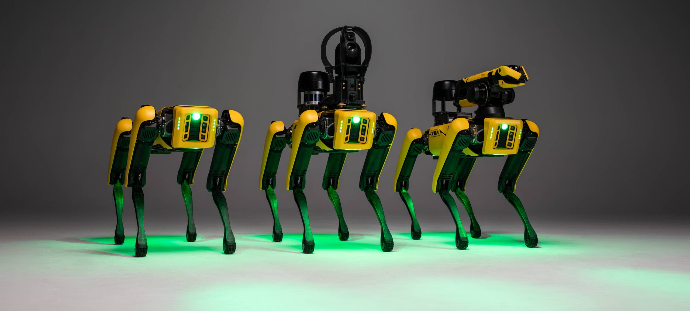
-
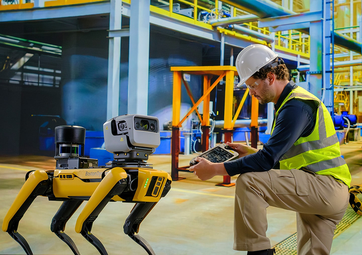
Robotics for safer, more predictable operations
With 360° perception and athletic intelligence, Spot helps teams monitor site conditions, identify potential hazards, and keep operations running smoothly across factories, construction sites, and research labs.
-
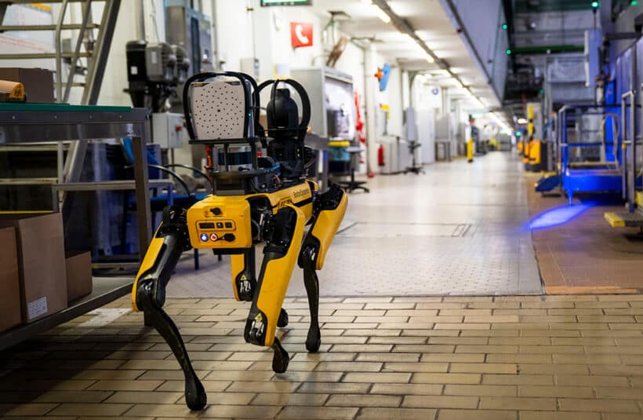
- Simple
- Easy to deploy and customize, Spot offers pre-configured solutions for inspection, research, and hazardous environments. Its 20.43kg payload capacity and robust API allow flexible integration for a wide range of applications.
-
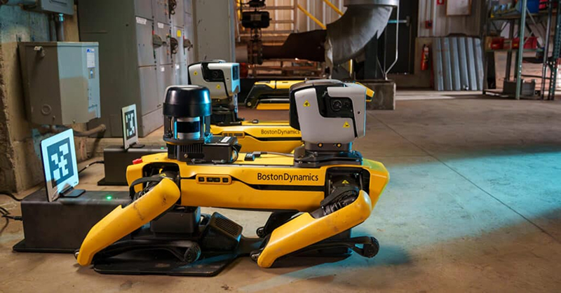
- Scalable
- From a single Spot to an entire fleet, our software enables remote management, centralized data access, and flexible communication. Boston Dynamics also provides training and support for seamless deployment and long-term success.
-
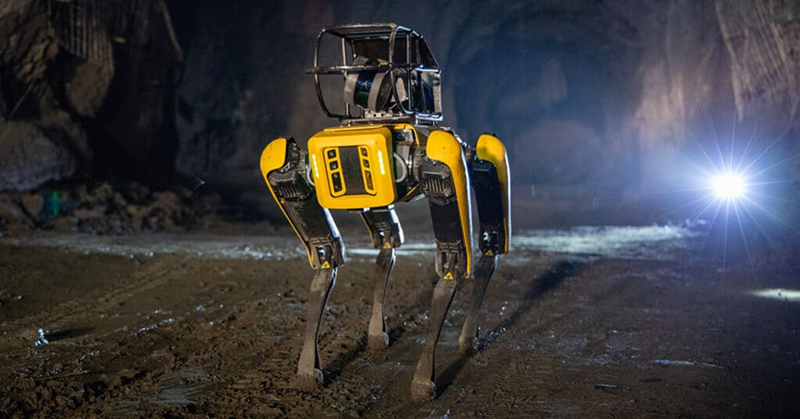
- Reliable
- Extensively tested for reliable daily operation, Spot autonomously recharges, navigates around obstacles, and self-rights after a fall. With over 1,500 robots in customer hands, Spot delivers dependable performance.
STRETCH
Warehouse Automation
Elevate case handling
Stretch handles hundreds of cases per hour, helping warehouses meet daily targets and manage growing order demands.
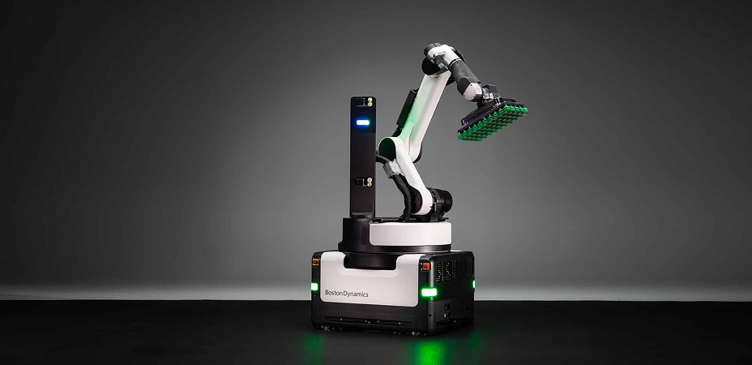
Mobility and manipulation for the warehouse
Stretch automates dull, dirty, and dangerous warehouse tasks, freeing your team to focus on higher-value work.
-
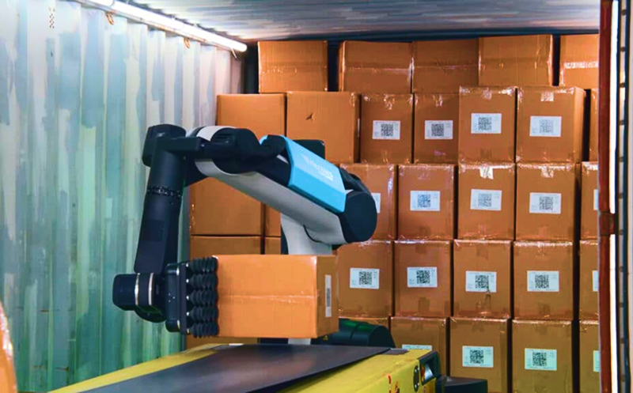
- Fast to Deploy
- Stretch is ready to deploy within days of delivery, working seamlessly with existing warehouse infrastructure. We provide comprehensive training and resources to help your team operate Stretch safely and efficiently.
-
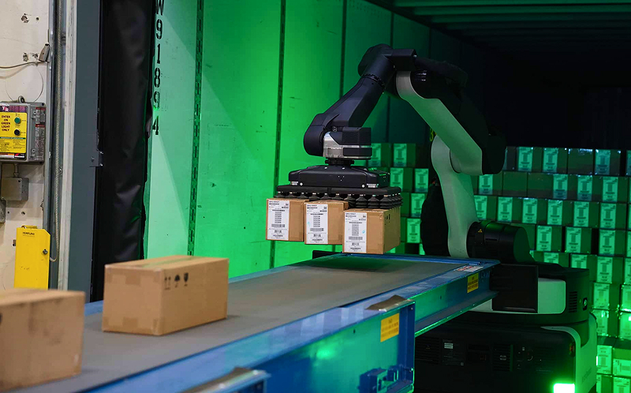
- Works Continuously
- With long-lasting battery life, Stretch operates across multiple shifts, day or night. Its advanced technology detects and retrieves fallen boxes automatically, keeping operations running without operator intervention.
-
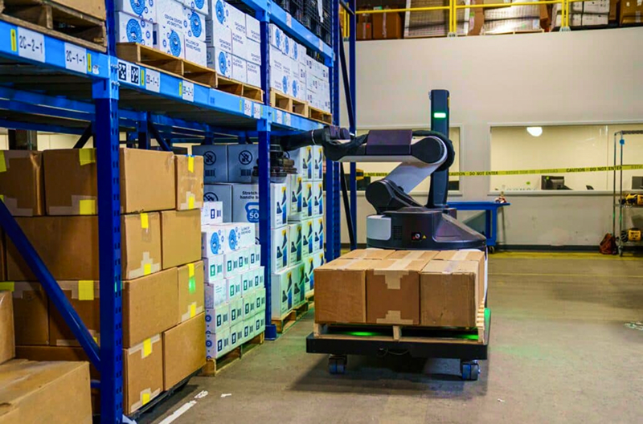
- Flexible
- Stretch handles a wide range of package types and sizes, from standard boxes to highly graphical packages weighing up to 50 pounds. It adapts to various container conditions and both neat and messy box configurations.